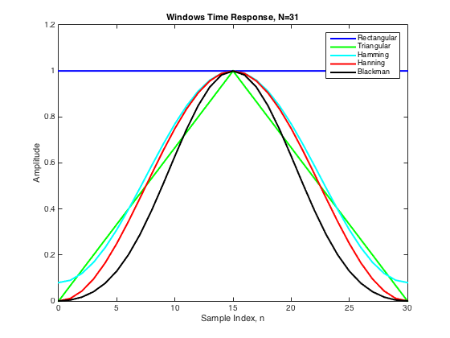
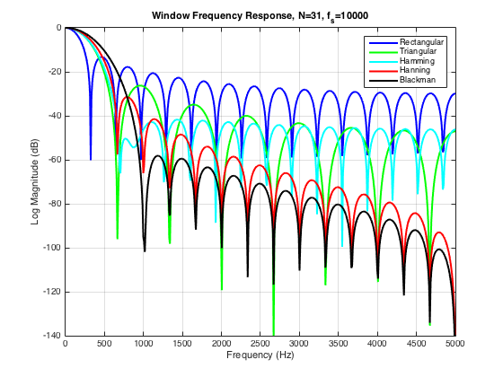
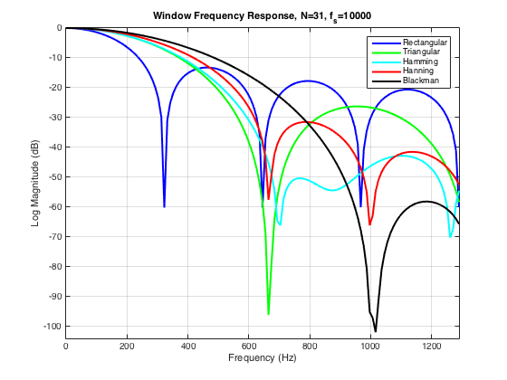
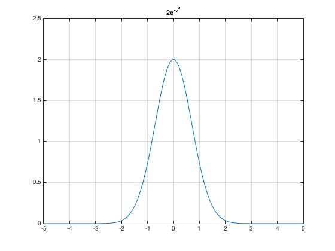
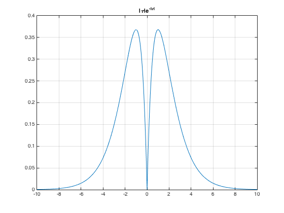
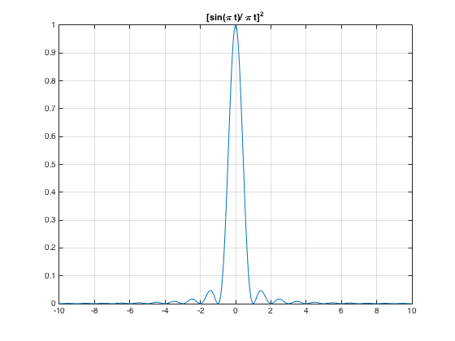
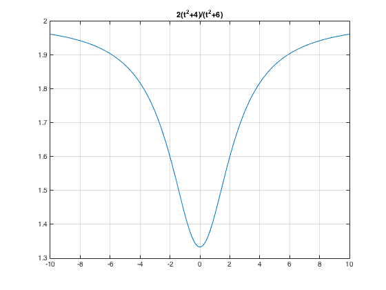
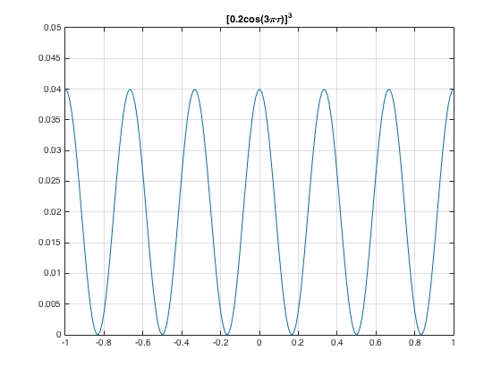
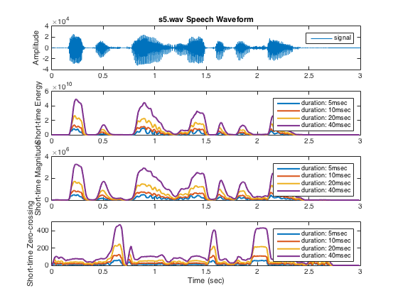
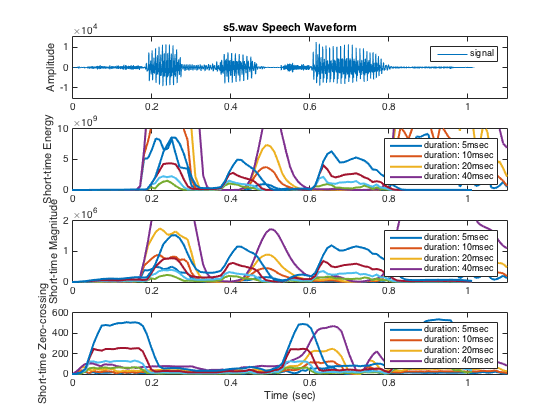

1
Contents
Part a)
Retangular Window
N = 31; n = [0:1:N-1]; r = @(n) double(n>=0 & n<=N-1); rf = r(n); plot(n,rf,'blue','LineWidth',2) xlabel('Sample Index, n'); ylabel('Amplitude'); title('Windows Time Response, N=31'); axis([0 30 0 1.2]); hold on % TriangularWindow n1 = [0:1:15]; n2 = [16:1:N-1]; t1 = @(n) n./15; t2 = @(n) 2-n./15; tf = [t1(n1) t2(n2)]; plot(n,tf,'green','LineWidth',2) hold on % Hamming Window n3 = [0:1:N-1]; h1 = @(n) 0.54-0.46*cos(pi.*n./15); plot(n,h1(n),'cyan','LineWidth',2) hold on % Hanning Window h2 = @(n) 0.5-0.5*cos(pi.*n./15); plot(n,h2(n),'red','LineWidth',2) hold on % Blackman Window h3 = @(n) 0.42-0.5*cos(pi.*n./15)+0.08*cos(2*pi.*n./15); plot(n,h3(n),'black','LineWidth',2) legend('Rectangular','Triangular','Hamming','Hanning','Blackman'); hold off
Part b
f = linspace(0,10000,1024); R_DFT = fft(rf,1024); plot(f,20*log10(abs(R_DFT)/max(R_DFT)),'blue','LineWidth',2); title('Window Frequency Response, N=31, f_s=10000'); xlabel('Frequency (Hz)'); ylabel('Log Magnitude (dB)'); axis([0 5000 -140 0]); grid on hold on T_DFT = fft(tf,1024); plot(f,20*log10(abs(T_DFT)/max(T_DFT)),'green','LineWidth',2); hold on H1_DFT = fft(h1(n),1024); plot(f,20*log10(abs(H1_DFT)/max(H1_DFT)),'cyan','LineWidth',2); hold on H2_DFT = fft(h2(n),1024); plot(f,20*log10(abs(H2_DFT)/max(H2_DFT)),'red','LineWidth',2); hold on H3_DFT = fft(h3(n),1024); plot(f,20*log10(abs(H3_DFT)/max(H3_DFT)),'black','LineWidth',2); legend('Rectangular','Triangular','Hamming','Hanning','Blackman'); hold off
Part c
f = linspace(0,10000,1024); R_DFT = fft(rf,1024); plot(f,20*log10(abs(R_DFT)/max(R_DFT)),'blue','LineWidth',2); title('Window Frequency Response, N=31, f_s=10000'); xlabel('Frequency (Hz)'); ylabel('Log Magnitude (dB)'); axis([0 1290.4 -104 0]); grid on hold on T_DFT = fft(tf,1024); plot(f,20*log10(abs(T_DFT)/max(T_DFT)),'green','LineWidth',2); hold on H1_DFT = fft(h1(n),1024); plot(f,20*log10(abs(H1_DFT)/max(H1_DFT)),'cyan','LineWidth',2); hold on H2_DFT = fft(h2(n),1024); plot(f,20*log10(abs(H2_DFT)/max(H2_DFT)),'red','LineWidth',2); hold on H3_DFT = fft(h3(n),1024); plot(f,20*log10(abs(H3_DFT)/max(H3_DFT)),'black','LineWidth',2); legend('Rectangular','Triangular','Hamming','Hanning','Blackman'); hold off
Part 3
t = -10:0.01:10; y = 2*exp(-t.^2); plot(t,y) title('2e^{-\tau^2}') axis([-5 5 0 2.5]) grid on
y = abs(t).*exp(-abs(t)); plot(t,y) title('|\tau|e^{-|\tau|}') grid on
y = (sin(pi*t)./(pi*t)).^2; plot(t,y) title('[sin(\pi t)/ \pi t]^2') grid on
y = 2*(t.^2+4)./(t.^2+6); plot(t,y); title('2(t^2+4)/(t^2+6)') grid on
y = (0.2*cos(3*pi.*t)).^2; plot(t,y) title('[0.2cos(3\pi\tau)]^3') axis([-1 1 0 0.05]) grid on
Part 6
s5.wav
N1 = 40; % duration 5(msec) n1 = [0:1:N1-1]; r1 = @(n) double(n>=0 & n<=N1-1); rf1 = r1(n1); N2 = 80; % window duration 10(msec) n2 = [0:1:N2-1]; r2 = @(n) double(n>=0 & n<=N2-1); rf2 = r2(n2); N3 = 160; % window duration 20(msec) n3 = [0:1:N3-1]; r3 = @(n) double(n>=0 & n<=N3-1); rf3 = r3(n3); N4 = 320; % window duration 40(msec) n4 = [0:1:N4-1]; r4 = @(n) double(n>=0 & n<=N4-1); rf4 = r4(n4); [y1,fs1,bit1,fmt1] = loadwav('s5.wav'); % load the speech file (s5.wav) t1 = [1:1:size(y1)]; t_reduce = [1:80:size(y1)]; % time shift 10(msec) endpoint = size(y1); En1 = conv(y1.^2,rf1); % short-time energy En2 = conv(y1.^2,rf2); En3 = conv(y1.^2,rf3); En4 = conv(y1.^2,rf4); Mn1 = conv(abs(y1),rf1); % short-time magnitude Mn2 = conv(abs(y1),rf2); Mn3 = conv(abs(y1),rf3); Mn4 = conv(abs(y1),rf4); y1_shift = [0;y1(1:1:endpoint-1)]; firstDiff = sgn(y1)-sgn(y1_shift); absFirstDiff = abs(firstDiff); Zn1 = conv(absFirstDiff,rf1); % short-time zero-crossing Zn2 = conv(absFirstDiff,rf2); Zn3 = conv(absFirstDiff,rf3); Zn4 = conv(absFirstDiff,rf4); subplot(4,1,1); plot(t1/fs1,y1); title('s5.wav Speech Waveform'); legend('signal'); ylabel('Amplitude'); axis([0 3 -4E4 4E4]); subplot(4,1,2); plot(t_reduce/fs1,En1(t_reduce),'LineWidth',2); hold on plot(t_reduce/fs1,En2(t_reduce),'LineWidth',2); hold on plot(t_reduce/fs1,En3(t_reduce),'LineWidth',2); hold on plot(t_reduce/fs1,En4(t_reduce),'LineWidth',2); legend('duration: 5msec','duration: 10msec','duration: 20msec','duration: 40msec'); ylabel('Short-time Energy'); axis([0 3 0 60E9]); subplot(4,1,3); plot(t_reduce/fs1,Mn1(t_reduce),'LineWidth',2); hold on plot(t_reduce/fs1,Mn2(t_reduce),'LineWidth',2); hold on plot(t_reduce/fs1,Mn3(t_reduce),'LineWidth',2); hold on plot(t_reduce/fs1,Mn4(t_reduce),'LineWidth',2); legend('duration: 5msec','duration: 10msec','duration: 20msec','duration: 40msec'); ylabel('Short-time Magnitude'); axis([0 3 0 40E5]); subplot(4,1,4); plot(t_reduce/fs1,Zn1(t_reduce),'LineWidth',2); hold on plot(t_reduce/fs1,Zn2(t_reduce),'LineWidth',2); hold on plot(t_reduce/fs1,Zn3(t_reduce),'LineWidth',2); hold on plot(t_reduce/fs1,Zn4(t_reduce),'LineWidth',2); legend('duration: 5msec','duration: 10msec','duration: 20msec','duration: 40msec'); xlabel('Time (sec)'); ylabel('Short-time Zero-crossing'); axis([0 3 0 500]);
should.wav
N1 = 52; % duration 5(msec) n1 = [0:1:N1-1]; r1 = @(n) double(n>=0 & n<=N1-1); rf1 = r1(n1); N2 = 104; % window duration 10(msec) n2 = [0:1:N2-1]; r2 = @(n) double(n>=0 & n<=N2-1); rf2 = r2(n2); N3 = 208; % window duration 20(msec) n3 = [0:1:N3-1]; r3 = @(n) double(n>=0 & n<=N3-1); rf3 = r3(n3); N4 = 416; % window duration 40(msec) n4 = [0:1:N4-1]; r4 = @(n) double(n>=0 & n<=N4-1); rf4 = r4(n4); [y1,fs1,bit1,fmt1] = loadwav('should.wav'); % load the speech file (should.wav) t1 = [1:1:size(y1)]; t_reduce = [1:104:size(y1)]; % time shift 10(msec) endpoint = size(y1); En1 = conv(y1.^2,rf1); % short-time energy En2 = conv(y1.^2,rf2); En3 = conv(y1.^2,rf3); En4 = conv(y1.^2,rf4); Mn1 = conv(abs(y1),rf1); % short-time magnitude Mn2 = conv(abs(y1),rf2); Mn3 = conv(abs(y1),rf3); Mn4 = conv(abs(y1),rf4); y1_shift = [0;y1(1:1:endpoint-1)]; firstDiff = sgn(y1)-sgn(y1_shift); absFirstDiff = abs(firstDiff); Zn1 = conv(absFirstDiff,rf1); % short-time zero-crossing Zn2 = conv(absFirstDiff,rf2); Zn3 = conv(absFirstDiff,rf3); Zn4 = conv(absFirstDiff,rf4); subplot(4,1,1); plot(t1/fs1,y1); title('s5.wav Speech Waveform'); legend('signal'); ylabel('Amplitude'); axis([0 1.1 -1.5E4 1.5E4]); subplot(4,1,2); plot(t_reduce/fs1,En1(t_reduce),'LineWidth',2); hold on plot(t_reduce/fs1,En2(t_reduce),'LineWidth',2); hold on plot(t_reduce/fs1,En3(t_reduce),'LineWidth',2); hold on plot(t_reduce/fs1,En4(t_reduce),'LineWidth',2); legend('duration: 5msec','duration: 10msec','duration: 20msec','duration: 40msec'); ylabel('Short-time Energy'); axis([0 1.1 0 10E9]); subplot(4,1,3); plot(t_reduce/fs1,Mn1(t_reduce),'LineWidth',2); hold on plot(t_reduce/fs1,Mn2(t_reduce),'LineWidth',2); hold on plot(t_reduce/fs1,Mn3(t_reduce),'LineWidth',2); hold on plot(t_reduce/fs1,Mn4(t_reduce),'LineWidth',2); legend('duration: 5msec','duration: 10msec','duration: 20msec','duration: 40msec'); ylabel('Short-time Magnitude'); axis([0 1.1 0 20E5]); subplot(4,1,4); plot(t_reduce/fs1,Zn1(t_reduce),'LineWidth',2); hold on plot(t_reduce/fs1,Zn2(t_reduce),'LineWidth',2); hold on plot(t_reduce/fs1,Zn3(t_reduce),'LineWidth',2); hold on plot(t_reduce/fs1,Zn4(t_reduce),'LineWidth',2); legend('duration: 5msec','duration: 10msec','duration: 20msec','duration: 40msec'); xlabel('Time (sec)'); ylabel('Short-time Zero-crossing'); axis([0 1.1 0 600]);